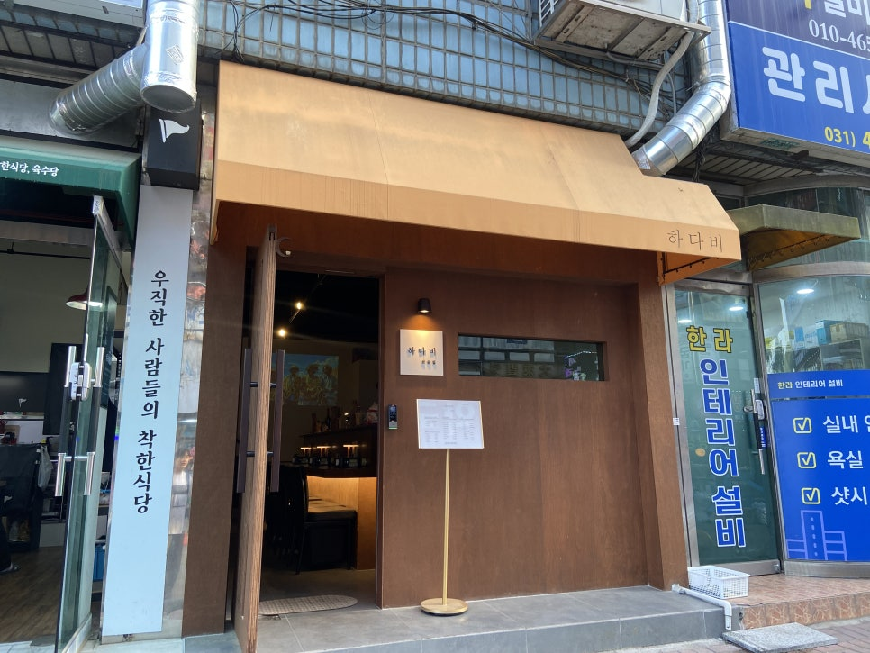
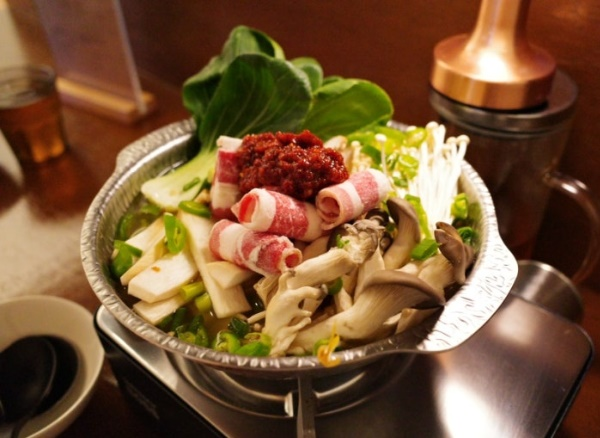
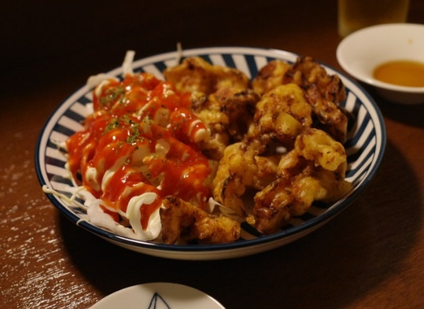

하다비
상록수역 근처 맛있는 이자카야

상록수역에서 보기 드문 감성 뿜뿜 ⭐
상록수역 근처 퇴근길에 잠깐 들려서 혼술하고 싶은 분위기의 하다비 !상록수역에서 정말 가깝습니다 !
이자카야 하면 빠질수없는 전골요리 ㅜㅜ
다찌석으로만 되어 있는 아담한 크기의 매장 !
12명 정도 앉을 수 있는 자리가 마련되어 있었어요
은은한 조명색 조명에 귀여운 소품들까지
분위기 있는 음악이 계속 흘러나와서
너무나도 편안한 분위기에서 즐길 수 있었습니다
대표 메뉴

하다비 전골
가격 : 22,000팔팔 끓인 다음 먹으라고 알려주셔서 팔팔 끓인다음 먹어봤더니 너무 맛있었다.
얼큰국물, 맑은국물 선택 가능한점도 굿 !
냄비 가득 재료가 차있어서 진짜 양이 많았다 !
청경채 버섯 숙주와 고기가 듬뿍,
청양고추도 들어있어서 너무나 칼칼하고 시원했다.
이거 완전 소주안주로 제격인 맛 !
얼른 먹고싶은 맛있는 냄새가 코를 자극했다.
대표 메뉴 2

닭 연골 튀김
가격 : 12,000양배추 샐러드와 오동통한 닭다리살 튀김이 같이 나왔는데 비주얼 무엇 ...
너무 맛있어보여서 먹어봤더니 정말 바삭하고 맛있었다 !
오독오독한 식감에 너무나 꼬숩고 맛있었다.
소스에 찍어서 먹으니까 풍미 두배..!
하다비 이자카야에서 튀김 + 전골 조합 끝장나는 조합이다 !
한상 난리나는 조합 !
위치정보 및 리뷰
영업 시간
화 정기휴무 (매주 화요일)월, 수 ~ 일 18:00 - 01:00 / 00:00 라스트 오더
네티즌 리뷰
lll**** : 음식도 정갈하고 맛있었어요 , 분위기도 너무 좋았아요 / ⭐⭐⭐⭐⭐eun**** : 하나하나 빠짐없이 너무 너무 맛있게 먹었습니다 ! / ⭐⭐⭐⭐⭐
gjr**** : 여기 편백찜 정말 너무 맛있어서 감동받았습니다 / ⭐⭐⭐⭐⭐
tfd**** : 여자친구랑 여러번 방문했는데 갈때마다 맛있었습니다 / ⭐⭐⭐⭐
loo**** : 산책중 혼술하고 싶어 들렸는데 너무 좋았습니다 / ⭐⭐⭐⭐
blu**** : 분위기 너무 좋구 음식도 담백해요 ! / ⭐⭐⭐⭐
-
MAINPAGE
더 많은 맛집 정보를 찾아보세요